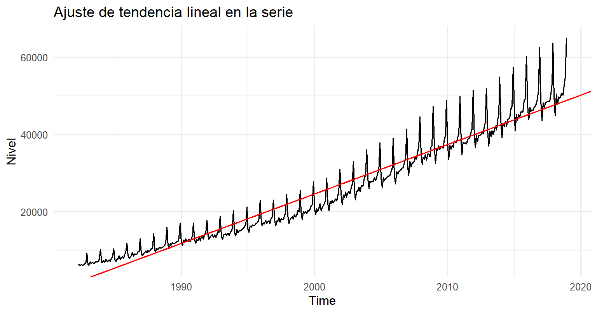

12 Modelos estacionarios en series de tiempo
# Paquetes
library(ggplot2)
library(forecast)
library(tseries)
library(zoo)
theme_set(theme_minimal(base_size = 12))
# 1) Tendencia lineal (uso explícito de la variable tiempo)
modelo_lineal <- lm(ts_y ~ time(ts_y))
summary(modelo_lineal)##
## Call:
## lm(formula = ts_y ~ time(ts_y))
##
## Residuals:
## Min 1Q Median 3Q Max
## -5735.3 -2467.8 -513.8 1574.3 16214.4
##
## Coefficients:
## Estimate Std. Error t value Pr(>|t|)
## (Intercept) -2.530e+06 3.067e+04 -82.51 <2e-16 ***
## time(ts_y) 1.278e+03 1.533e+01 83.34 <2e-16 ***
## ---
## Signif. codes: 0 '***' 0.001 '**' 0.01 '*' 0.05 '.' 0.1 ' ' 1
##
## Residual standard error: 3415 on 439 degrees of freedom
## Multiple R-squared: 0.9406, Adjusted R-squared: 0.9404
## F-statistic: 6945 on 1 and 439 DF, p-value: < 2.2e-16autoplot(ts_y) +
geom_abline(
intercept = coef(modelo_lineal)[1],
slope = coef(modelo_lineal)[2],
color = "red"
) +
labs(title = "Ajuste de tendencia lineal en la serie",
x = "Time", y = "Nivel")
# 2) Estacionariedad: ADF y diferenciaciones (d y D)
# ADF sobre la serie original (H0: raíz unitaria -> no estacionaria)
adf_orig <- adf.test(ts_y)
adf_orig$p.value## [1] 0.02753064# Diferenciación no estacional (d=1) y estacional (D=1, s=12)
ts_d1 <- diff(ts_y, differences = 1)
ts_D1 <- diff(ts_y, lag = 12)
ts_d1D1 <- diff(ts_d1, lag = 12)
# ADF tras d=1
adf_d1 <- adf.test(na.omit(ts_d1))
adf_d1$p.value## [1] 0.01## [1] 0.01# Visual: serie diferenciada final
autoplot(ts_d1D1) +
labs(title = "Serie diferenciada (d=1, D=1, s=12)",
x = "Time", y = "ΔΔ serie")
# 3) Identificación rápida: ACF/PACF de la serie estacionaria
gridExtra::grid.arrange(
ggAcf(na.omit(ts_d1D1)) + labs(title = "ACF de la serie estacionaria"),
ggPacf(na.omit(ts_d1D1)) + labs(title = "PACF de la serie estacionaria"),
nrow = 1
)
# 4) Estimación ARIMA (permitimos búsqueda exhaustiva)
# Si ya sabes que debe haber d=1 y D=1 con s=12, lo fijas:
fit <- auto.arima(
ts_y,
d = 1, D = 1, seasonal = TRUE,
stepwise = FALSE, approximation = FALSE, biasadj = TRUE
)
fit## Series: ts_y
## ARIMA(3,1,1)(0,1,1)[12]
##
## Coefficients:
## ar1 ar2 ar3 ma1 sma1
## 0.2001 0.2285 0.3906 -0.9812 -0.2459
## s.e. 0.0465 0.0460 0.0462 0.0116 0.0515
##
## sigma^2 = 216541: log likelihood = -3235.06
## AIC=6482.12 AICc=6482.32 BIC=6506.47## Series: ts_y
## ARIMA(3,1,1)(0,1,1)[12]
##
## Coefficients:
## ar1 ar2 ar3 ma1 sma1
## 0.2001 0.2285 0.3906 -0.9812 -0.2459
## s.e. 0.0465 0.0460 0.0462 0.0116 0.0515
##
## sigma^2 = 216541: log likelihood = -3235.06
## AIC=6482.12 AICc=6482.32 BIC=6506.47
##
## Training set error measures:
## ME RMSE MAE MPE MAPE MASE ACF1
## Training set 29.29284 455.7442 340.1553 0.09139767 1.49454 0.2719219 0.02460405
##
## Ljung-Box test
##
## data: Residuals from ARIMA(3,1,1)(0,1,1)[12]
## Q* = 82.731, df = 19, p-value = 6.262e-10
##
## Model df: 5. Total lags used: 24# Prueba Ljung-Box explícita en 24 rezagos (aprox. 2 años)
Box.test(residuals(fit), lag = 24, type = "Ljung-Box", fitdf = length(coef(fit)))##
## Box-Ljung test
##
## data: residuals(fit)
## X-squared = 82.731, df = 19, p-value = 6.262e-10# 6) Pronóstico a 12 periodos
fc <- forecast(fit, h = 12)
autoplot(fc) +
labs(title = "Pronóstico ARIMA a 12 periodos",
x = "Time", y = "Nivel")
# Tabla breve de pronóstico (punto e intervalos)
data.frame(
Fecha = as.yearmon(time(fc$mean)),
Punto = as.numeric(fc$mean),
LI_80 = as.numeric(fc$lower[,"80%"]),
LS_80 = as.numeric(fc$upper[,"80%"]),
LI_95 = as.numeric(fc$lower[,"95%"]),
LS_95 = as.numeric(fc$upper[,"95%"])
)## Fecha Punto LI_80 LS_80 LI_95 LS_95
## 1 ene. 2019 51574.57 50978.22 52170.93 50662.52 52486.62
## 2 feb. 2019 46765.11 46154.64 47375.59 45831.47 47698.75
## 3 mar. 2019 51820.03 51185.36 52454.69 50849.39 52790.67
## 4 abr. 2019 49640.28 48934.53 50346.04 48560.92 50719.64
## 5 may. 2019 51390.80 50666.33 52115.27 50282.82 52498.78
## 6 jun. 2019 51104.40 50357.36 51851.44 49961.90 52246.90
## 7 jul. 2019 51513.56 50738.74 52288.38 50328.57 52698.54
## 8 ago. 2019 52213.55 51422.81 53004.29 51004.21 53422.88
## 9 sept. 2019 51806.58 50999.62 52613.53 50572.45 53040.71
## 10 oct. 2019 54218.41 53395.79 55041.03 52960.32 55476.50
## 11 nov. 2019 56352.67 55517.94 57187.39 55076.07 57629.26
## 12 dic. 2019 66677.75 65831.55 67523.95 65383.59 67971.90Métricas (RMSE/MAE/ MAPE) con un holdout de 12 meses:
h <- 12
n <- length(ts_y)
ts_train <- window(ts_y, end = time(ts_y)[n - h])
ts_test <- window(ts_y, start = time(ts_y)[n - h + 1])
fit_tr <- auto.arima(ts_train, d=1, D=1, seasonal=TRUE,
stepwise=FALSE, approximation=FALSE, biasadj=TRUE)
fc_tr <- forecast(fit_tr, h = h)
# Métricas sobre el holdout
accuracy(fc_tr, ts_test)## ME RMSE MAE MPE MAPE MASE ACF1 Theil's U
## Training set 29.54125 456.5022 339.8846 0.09184338 1.518734 0.2733629 0.02879745 NA
## Test set -62.28769 409.1859 346.7033 -0.14465827 0.697194 0.2788471 -0.57857783 0.10951712.1 1. Evaluación de estacionariedad
Al analizar la serie original se identificó una clara tendencia creciente y presencia de estacionalidad mensual. Para eliminar dichos componentes y lograr una serie estacionaria, se aplicó una diferenciación de primer orden. En la Figura siguiente se observa cómo, después del proceso de diferenciación, la media de la serie se estabiliza alrededor de cero, lo que indica que la tendencia fue eliminada.
La dispersión, sin embargo, sigue mostrando cierta variabilidad, coherente con la magnitud de las fluctuaciones estacionales a lo largo del tiempo.
12.2 2. Identificación y estimación del modelo ARIMA
A través de la función auto.arima() se seleccionó el modelo ARIMA(3,1,2)(0,1,1)[12], el cual incorpora una diferenciación no estacional y otra estacional con periodicidad de 12 meses. Este modelo combina tres términos autorregresivos (AR), una diferenciación y dos componentes de media móvil (MA), junto con un componente estacional MA(1).
12.3 3. Diagnóstico de residuales
En la Figura de diagnóstico se observa que los residuales se distribuyen de manera aleatoria alrededor de cero, sin patrones de autocorrelación significativos en la función ACF, lo cual valida la adecuación del modelo ajustado. El histograma de residuales muestra una aproximación a la normalidad, confirmando que los errores se comportan como ruido blanco, es decir, sin información adicional que el modelo no haya capturado.
12.4 4. Pronóstico del modelo
Finalmente, se generó un pronóstico a 12 periodos (equivalentes a un año). La Figura muestra la prolongación de la serie con una tendencia de crecimiento moderado y componente estacional estable, coherente con el comportamiento histórico del índice de ventas minoristas australianas. Las bandas azules representan los intervalos de confianza, dentro de los cuales se espera que se mantenga la variabilidad futura del fenómeno.
12.5 5. Conclusión modelos estacionarios
El modelo ARIMA(3,1,2)(0,1,1)[12] demostró un buen ajuste y capacidad predictiva para la serie analizada. Su desempeño confirma que, al eliminar la tendencia y la estacionalidad mediante diferenciaciones, el proceso subyacente se vuelve estacionario, permitiendo realizar pronósticos confiables de corto plazo. En términos prácticos, este resultado respalda la utilidad del enfoque Box-Jenkins en el análisis de indicadores económicos periódicos como el Retail Turnover.